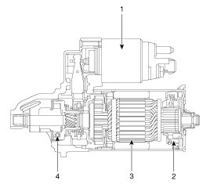
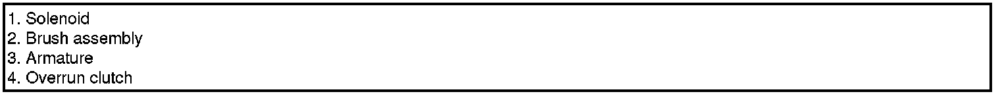
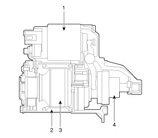
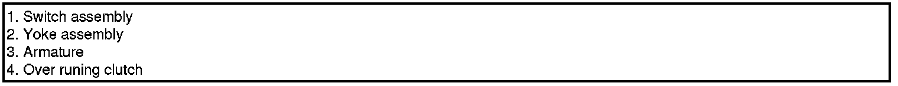

Starting System
Description
The starting system includes the battery, starter, solenoid switch, ignition switch, inhibitor switch (A/T), clutch pedal switch (M/T), ignition lock switch, connection wires and the battery cable.
When the ignition key is turned to the start position, current flows and energizes the starter motor's solenoid coil.
The solenoid plunger and clutch shift lever are activated, and the clutch pinion engages the ring gear.
The contacts close and the starter motor cranks.
In order to prevent damage caused by excessive rotation of the starter armature when the engine starts, the clutch pinion gear overruns.
In conjunction with the ISG function, the starter motor must do a great deal more work. Therefore, the starter motor is configured for a significantly higher number of start cycles. The components of the starter motor have been adapted to the higher requirements.
NOTE:
- There are two kinds of starter, ISG type starter and Non-ISG type.
When replace the starter, confirm that the part number and connector shape.
CAUTION:
- ISG (Idle stop & go) system equipped vehicle always use the ISG type starter only. If the other starter has installed, this can potentially lead to engine electrical trouble or ISG system error.
WARNING:
- Do not disassemble the ISG type starter.
If the starter troubles occur, replace the starter.
[ISG Type]


[Non-ISG Type]

